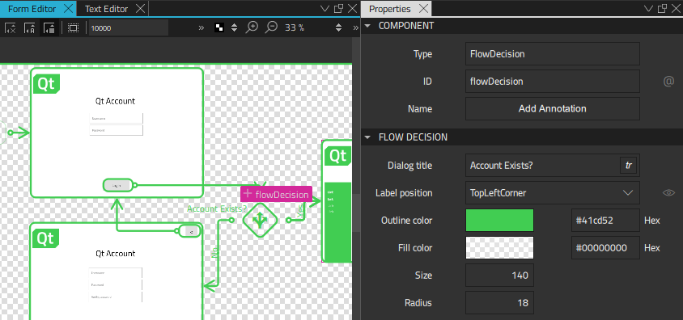
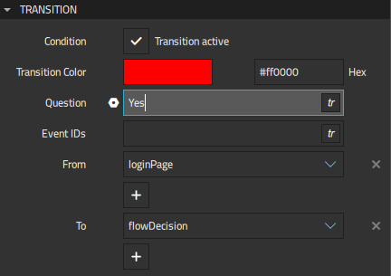
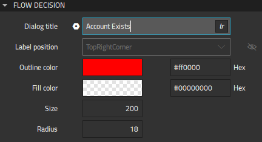

Simulating Conditions
Part of any complex UI is the conditional logic it uses to present its state to users or to collect and process data from various sources. Data can be produced by user interaction from a variety of inputs, such as buttons and controls, sensor readings from arrays of equipment, or general values received from backend or service APIs.
The Flow Decision component simulates conditions by displaying a list of options you can choose from when you preview the flow. This enables you to prototype complex interactions before you have access to the physical controls, backend, or sensor data that will be required for the production version.

To simulate conditions:
- Drag a Flow Decision component from Components Flow View to a flow view in the Navigator or 2D view.
- Select the flow item where you want the application to start in the Navigator or 2D view, and then select Flow > Set Flow Start in the context menu.
- Create an action area for the component that will trigger the condition and connect it to the flow decision.
- Select the flow decision, and then select Connect in the context menu to create connections to the flow items that will open depending on whether the condition is met.
- In the Properties view, Dialog title field, enter a title for the selection dialog that opens when the condition is triggered.
- Select a transition line in the Navigator or 2D view and add a descriptive text in the Question field in Properties to represent a choice in the selection dialog.

- Press Alt+P to preview the UI.
- Select action areas in the preview, double-click events in the event list, or use the keyboard shortcuts to trigger events.
Flow decisions are listed in a dialog where you can select which condition is met to see the results.

Flow Decision Properties
You can specify basic properties for a Flow Decision component in the Type and ID fields in the Component section in the Properties view. Specify properties for flow decisions in the Flow Decision section.

In the Dialog title field, enter a title for the selection dialog that opens when the condition is triggered.
You can specify the following properties to change the appearance of the flow decision icon :
- Select
 to display the ID of the Flow Decision component in the 2D view.
to display the ID of the Flow Decision component in the 2D view. - In the Label position field, select the corner of the flow decision icon to place the label in.
- In the Size field, specify the size of the flow decision icon.
- In the Radius field, specify the radius of the flow decision icon corners.
You can use the color picker to set the outline and fill color of the flow decision icon.